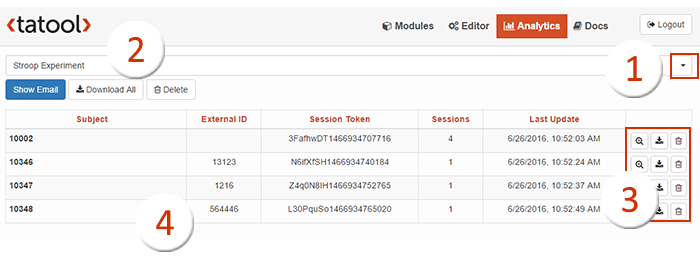

Analytics
The Analytics tab lists the data for each module, allowing researchers to monitor their modules and to download the data collected. Here, the following actions can be taken:

Screenshot of the Analytics tab
- Select any of the modules previously added to your Repository via a drop-down menu.
- Monitor your module and inspect the data:
- Choose to run your private module in blind mode by listing anonymised codes or to display your subjects' email addresses with which you invited them (see Publishing your Module). Note that public modules are always automatically anonymised by using internal user codes.
- Download the zipped data from all subjects.
- Delete the module from Analytics once your study is completed and all data had been downloaded. Note that this irreversible step deletes all data from the web server.
- The table comprises the following columns:
- Subject lists all users that executed your module.
- ExternalID is a string of characters you can provide with your module URL (for instructions on how to set an external ID, click on Show URL when Publishing your Module). An external ID allows for checking the source of module executions. For example, you can use it to monitor which way of distributing your experiment was most effective (e.g., through Twitter or Facebook), or to determine the Worker ID when using Amazon MTurk. And in most cases you want to assign a unique code to your participants, which can easily be tracked in Analytics using the External ID.
- The SessionToken is the completion code provided at the end of Modules executed from a URL and can be used in combination with Amazon MTurk.
- Sessions is the number of executions by each subject.
- Last Update provides date and time of the last data upload for each subject.
- Inspect single sessions and subjects:
- Show user details for each session such as its start and end time and the number of trials completed.
- Download the zipped data of a single user (will open in a pop-up window).
- Delete data from a single user. Note that this irreversible step deletes the data from the web server.